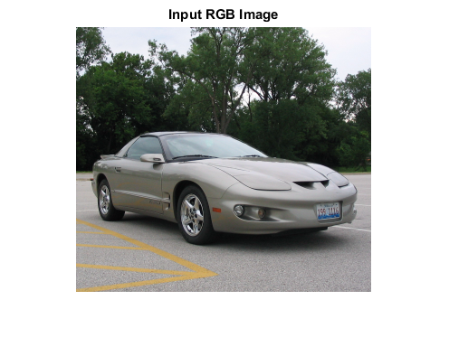
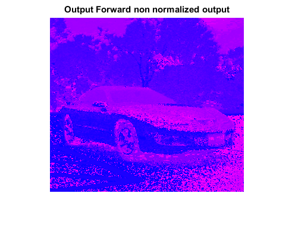
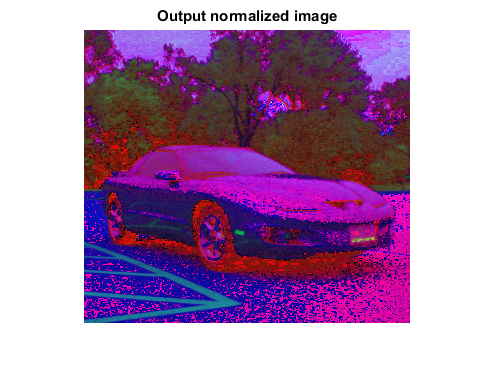

RGB2HSL_CVIP
rgb2hsl_cvip() - Converts Red-Green-Blue Color space to Hue-Saturation-Luminance Color space.
Contents
SYNTAX
outputImage = rgb2hsl_cvip(InputImage, type)
Input Parameters include :
- InputImage - RGB color space Image
- type - output image preference (0,1) (0 = Forward non normalized output) (1 = gives normalized output)
Output Parameter include :
- Output Image - Output Image
To view the 8-bit image of type double, divide by 255.
To view the 16-bit image of type double, divide by 65535.
DESCRIPTION
This function converts RGB Color space to HSL (Hue-Saturation-Lightness) Color space. The HSL color transform allows us to describe colors in terms that we can more readily understand. The lightness (also referred to as intensity or value) is the brightness of the color,and the hue is what we normally think of as "color" (e.g. green, blue, or orange). The saturation is a measure of how much white is in the color; for example, pink is red with more white, so it is less saturated than a pure red. Since the HSL color space was developed based on heuristice relating to human perception, various methods are available to transform RGB pixel spaces into the HSL color space. Most of these are algorithmic in nature and are geometric approximations to mapping the RGB color cube into some HSL-type color space. HSL color spaces are found as follows:
M = max(R,G,B)
m = min(R,G,B)
C = M - m
undefined, if C=0
H' = (G-B)/C mod 6, if M = R
(B-R)/C + 2, if M = G
(R-G)/C + 4, if M=B
H = 60 * H'
S = 0, if L=1
C/(1-|2L-1|), otherwise
L = (M+m)/2
REFERENCE
https://en.wikipedia.org/wiki/HSL_and_HSV
EXAMPLE
% Read Image X = imread('Car.bmp'); % Call function S1 = rgb2hsl_cvip(X,0); S2 = rgb2hsl_cvip(X,1); % Display Input Image figure;imshow(X);title('Input RGB Image'); % Display Output Image figure;imshow(S1,[]);title('Output Forward non normalized output'); figure;imshow(S2,[]);title('Output normalized image');  
CREDITS
Author: Deependra Mishra, March 2017
Copyright © 2017-2018 Scott
E Umbaugh
For updates visit CVIP Toolbox Website